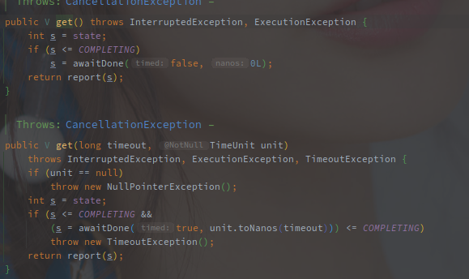
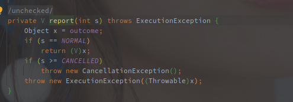
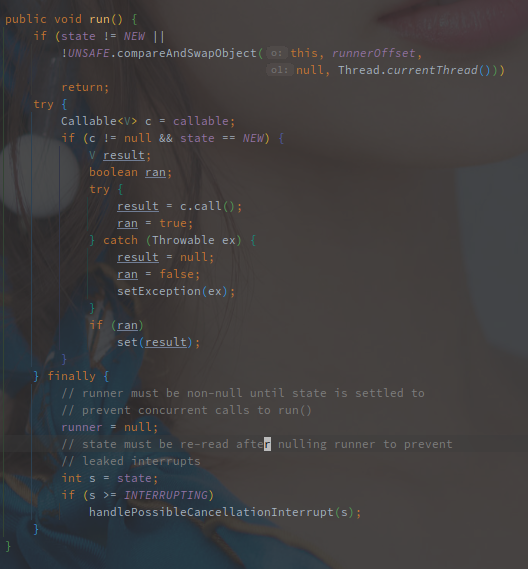
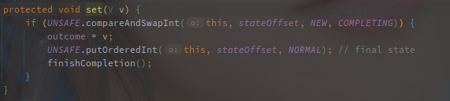
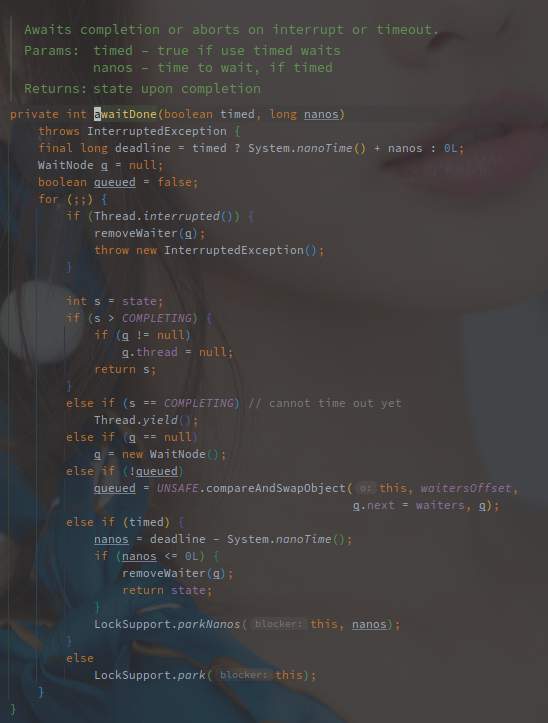
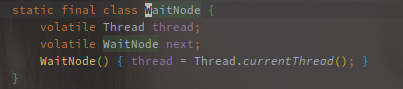
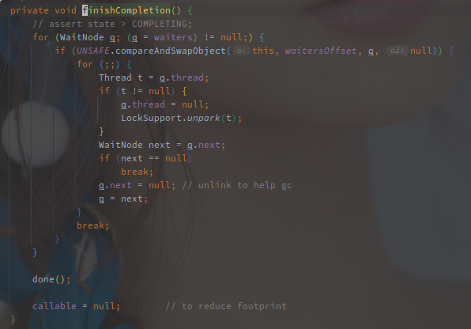
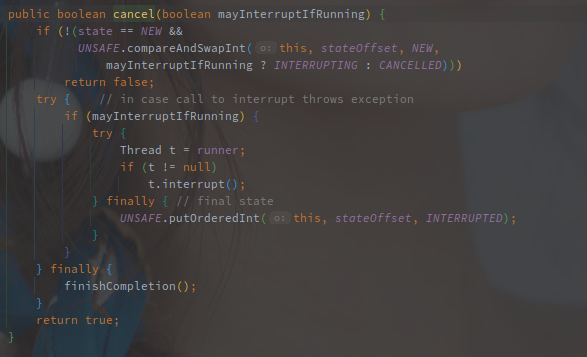
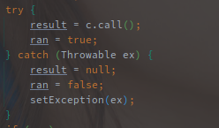
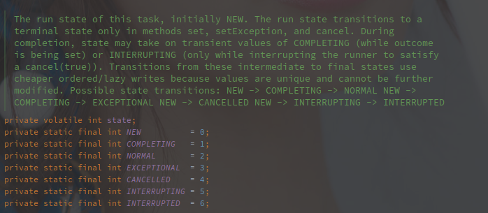

FutureTask源码解析
[TOC]
概述
FutureTask 就是对一个异步任务的抽象，实现了 Future#get 方法，可以在任务未完成的时候实现阻塞获取。
FutureTask 内部实现了一个简易的双向链表保存等待的线程对象，未完成的时入队列（入队列依旧使用的 CAS 自旋）并使用 LockSupport 阻塞线程，完成之后唤醒阻塞的线程。
任务完成之后，如果有返回值会直接塞到 FutureTask@outcome 变量中。
相关类族
FutureTask 的继承关系图如下:

FutureTask 直接继承了 RunnableFuture，而 RunabkleFuture 又继承了 Future 和 Runnable 接口。
相当于 FutureTask 间接继承了 Runnable，所以它可以作为一个任务向 ThreadPoolExecutor 提交并执行。
另外的 Future 可以简单看一下它的方法列表：

| 方法名称 | 方法作用 |
|---|---|
| cancel(boolean) | 取消任务，布尔参数表示如果任务已经启动是否需要中断 |
| get() | 阻塞获取任务结果 |
| get(long,TimeUnit) | 带超时时间的阻塞获取任务结果。 |
Future 在 JDK 中表示异步结果。
cannel(Boolean) 方法的参数需要注意，如果为 ture 那么就算任务已经启动也会发出中断信号。
Netty 中的 Future 增加了方法的回调。
基本概念
以下是 FutureTask 的类注释:

FutureTask 是一个可以取消的异步计算任务，提供了 Future 中启动任务，取消任务以及在获取任务结果的基础实现，任务的结果只有在结束之后才能获取。get 方法会阻塞直到任务结束，在任务已经结束之后，不能重启或者取消。
FutureTask 可以用于包装 Callable 或者 Runnable 对象，因为 FutureTask 继承了 Runnable，所以 FutureTask 也可以用 Executor执行。
总而言之，FutureTask 就是一个异步的任务类型，它提供的作用如下:
可以异步执行，因为 FutureTask 实现了 Runnable 接口。
提供结果的获取方法。
在结束之后 FutureTask 需要保存这个结果，
在未结束的时候阻塞获取结果的线程
- 在结束之后唤醒并通知对应线程
可以在未结束之前随时取消任务，此时需要唤醒阻塞的线程
源码实现
获取任务结果
FutureTask 中定义了 outcome 这个成员变量用于存储任务的执行结果。
不仅包含正常的返回结果，如果执行有异常也会保存在 outcome。
通过 get() 方法获取任务的结果:

通过当前任务状态的对比，如果任务的状态小于 COMPLETING ，表示任务还没有结束，就进入阻塞的流程。
阻塞结束之后，会返回最新的任务状态（awaitDone 中的逻辑可以看下文），然后处理，如果任务已经完成，否则直接进行状态处理。
以下是状态的处理方法，此时任务的状态肯定大于 COMPLETING :

如果任务状态正常则返回正常的结果，否则都会报错，包含任务已经取消异常或者执行失败异常。
FutureTask 通过状态来判断任务的执行结果，例如任务被取消就是 CANCELLED ，任务完成就是 NORMAL。
具体的状态流转见下图。
这里直接就使用的的 outcome ，那么结果又是什么时候被赋值到这里的呢？
任务执行
接下来看 FutureTask 作为 Runnable 的 run() 方法:

刨除其他代码来说，整个 run() 的逻辑非常简单，就是调用 Callable 的 call() 方法，获取执行结果，然后 set 结果到FutureTask。
FutureTask 可以以 Callable 以及 Runnable 为原始对象，如果为 Runnable 就会先将其包装成一个 FutureTask 。
详细逻辑见构造函数。
以下为结果赋值方法：

先将状态从 NEW 变为 COMPLETING ，赋值到 outcome 之后又变为 NORMAL 。
任务在执行期间状态一直为 NEW 。
COMPLETING 状态下，任务已经执行完毕，进入任务结果的保存阶段。
保存完毕后，任务进入 NORMAL 状态。
修改为 NORMAL 状态之后，会进一步调用 finishCompletion 方法，该方法用于唤醒阻塞的等待线程。
除了 run 方法，另外还有 runAndReset 方法，该方法在执行完之后并不设置执行结果，并且状态还为 NEW。
在 ScheduledThreadPoolExecutor 中实现周期性任务就用了该方法。
阻塞及唤醒
先来看阻塞的逻辑，也就是 awaitDone 方法:

这里有类似AQS自旋入队列的逻辑。
每次循环前都会判断当前线程是否被中断，中断的话会将当前线程从Waiter中删除。
获取 FutureTask 的执行结果是可以中断的。
然后根据状态判断，如果状态大于 COMPLETING，说明任务已经完成，则直接返回当前的状态。
如果状态为 COMPLETING ，则让出当前的CPU时间片，
如果 q 为空就创建一个 WaitNode，如果 queued 为false则将 q 也就是上次循环创建的 WaitNode 入队列。
创建的 WaitNode 会包含当前的线程:

WaitNode 就是简化版的链表，以所有阻塞的线程作为节点，保存所有等待结果的线程。
另外根据 UNSAFE 的方法调用情况可以看出新的 WaitNode 是添加到链表的头中的，也就是头插法。
之后根据是否有超时时间，调用对应的 LockSupport#park 方法挂起线程。
总结来说，阻塞的逻辑完整的就是创建 WaitNode ，进入等待队列，挂起当前线程。
在任务一直在执行的情况下，
首次循环会创建一个 WaitNode ，第二次循环会将 WaitNode 入队列，第三次循环会将当前的线程挂起。
如果第二步一直失败就会无限循环的尝试入队列，因此尝试获取结果的线程过多，导致竞争激烈，那么就会存在大量的循环。
理论上来说至少需要三次循环才会挂起当前线程，其中如果任务状态改变就会进入上述的几种状态的 if 语句。
再来说说唤醒的事情，也就是在 set() 和 setException() 中调用的 finishCompletion() 方法。
finishCompletion 方法就是在任务执行完毕之后唤醒所有的阻塞线程的逻辑。

该方法就是从 waiters 开始遍历所有阻塞线程并一一唤醒。
因为 waiters 的入队顺序是头插法，所以此时的唤醒是根据阻塞事件的前后，以FILO的形式处理的。
最先等待的线程，最后被唤醒。
这里可以稍加修改，使支持头插法和尾插法。
done() 是模板方法，可以在子类中实现，用于扩展。
任务取消
入参 mayInterruptIfRunning 的意思就是如果任务已经启动是否需要中断。

取消的方法相对简单，调用 runner 也就是正在执行任务的线程，然后中断它，中断之后状态变为 INTERRUPTED 。
前置的条件判断，只有状态为 NEW 的任务才可以取消。
新建和执行中的任务都是 New 的状态。
这是就会出现一种情况，如果执行任务的线程在线程池中，那么该线程会如何呢？
可以在 FutureTask 的 run() 方法中再看一眼:

如上图，异常其实在 FutureTask 的 run() 方法中全被 catch 住了，所以对于线程池或者普通线程来说就是类似普通的任务结束。
这里也是 FutureTask 的设计重点吧， FuturTask 在执行包裹的任务(Runnable/Callable)的过程中不会向外抛出任何的异常，异常都是被当做正常的返回处理的。
另外就是这个状态的变化，取消 CNACELLED 并不一定是任务取消的最终状态，也可能是 INPERRUPTED 。
也就是说，取消任务的时候入参如果为 false ，任务可能还是继续在执行的，只是结果不可见了。
上文也说过，如果最终获取的状态为 CANCELLED，会抛出 CancellationException 。
任务状态
以下是在 FutureTask 中定义的七种任务状态。

NEW 表示初始状态以及执行中的状态，也就是说任务从创建到完成都是 NEW 的状态。
COMPLETING 表示任务结束正在保存任务结果的状态。
NORMAL 表示任务正常结束的状态。
EXCEPTIONAL 表示任务执行出现异常的状态。
CNACELLED 表示任务已经被取消。
INTERRUPTING 表示任务正在中断中， INPERRUPTED 表示任务已经中断。

总结
FutureTask 代表了一个可异步执行的任务，提供了任务结果的存放以及获取方法，也维护了任务的即时状态。
FutureTask 最终使用 LockSupport 来完成线程的阻塞和唤醒。
FutureTask 需要在任务没有完成的时候阻塞获取结果的线程，此时会将所有获取结果的线程组成一个链表。
其内部维护了一个单向的阻塞链表，采用头插法保存所有等待任务结果的线程对象，取消任务或者任务完成后从头开始唤醒所有线程处理。
因为头插法的缘故，第一个阻塞的线程反而是最后一个被唤醒的。
FutrueTask 中使用不同的状态表示当前的任务执行进度，以单个 outcome 表示异常和结果。
FutureTask是一个基本的异步任务模型，基于该种异步任务模型可以扩展出更多的东西，例如在 ScheduledThreadPoolExecutor 中的 ScheduledFutureTask 。